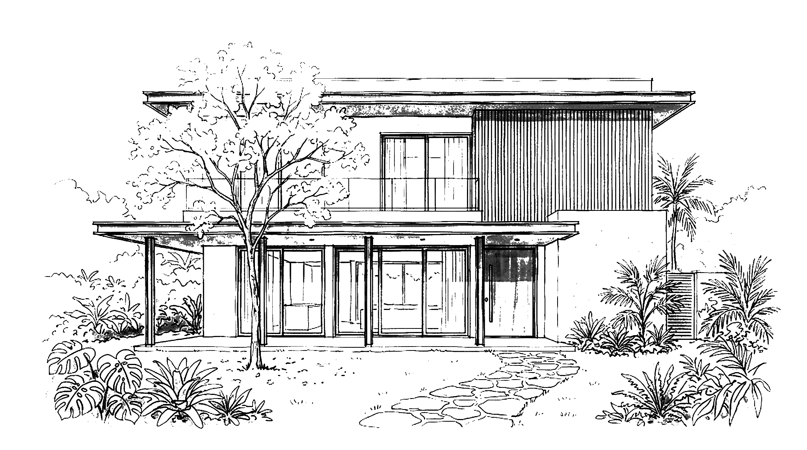
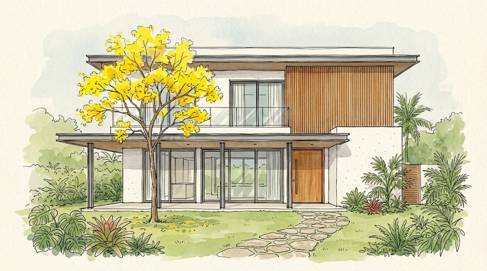

Arquitetura de Patrimônio e Restauro
Especializada na conservação, recuperação e restauração de edifícios históricos e patrimônios tombados.
Prancha 01
A arquitetura é a arte de planejar espaços e cidades, unindo técnica e estética. Ela é essencial porque garante segurança, melhora o bem-estar e a saúde com ambientes confortáveis, promove a sustentabilidade e preserva a identidade cultural da sociedade.


Prancha 02
As áreas mais bem remuneradas na arquitetura:
Especializada na conservação, recuperação e restauração de edifícios históricos e patrimônios tombados.
Focada no gerenciamento de canteiros, controle de custos, prazos, equipes e modelagem de informação da construção (BIM).
Elaboração de planos diretores, ordenamento de cidades, grandes projetos de mobilidade e infraestrutura pública.
Projetos de grande porte para incorporadoras, hospitais, hotéis e edifícios empresariais.
Sócios de escritórios consolidados ou arquitetos autônomos com marca própria no mercado de alto padrão.
Prancha 03
As áreas mais promissoras e bem remuneradas da arquitetura para os próximos anos:
Focada em projetos com pegada de carbono zero, eficiência energética, uso de energias renováveis e certificações ambientais (como LEED).
Integração de inteligência artificial, realidade aumentada, gêmeos digitais (digital twins) e gestão de dados complexos de construção.
Planejamento urbano adaptado a mudanças climáticas, mobilidade sustentável e infraestrutura de cidades conectadas.
Design focado no bem-estar mental e fisiológico dos usuários, impulsionado pela alta demanda em espaços de saúde e ambientes corporativos.
Especialização em arquitetura industrializada, fabricação digital e impressão 3D para obras mais rápidas e econômicas.
Prancha 04
As áreas com tendência a menor remuneração no futuro da arquitetura são aquelas altamente repetitivas, operacionais ou suscetíveis à automação direta por inteligência artificial e ferramentas generativas:
Funções focadas apenas na execução manual de desenhos técnicos, plantas e detalhamentos, que serão cada vez mais automatizados por IA generativa e softwares de código.
A criação de imagens 3D estáticas e renders básicos tende a perder valor econômico com o avanço de algoritmos capazes de gerar maquetes virtuais ultrarrealistas em segundos.
Setor já saturado que enfrentará maior pressão de plataformas online de design padronizado, autodesign e ferramentas de decoração automatizadas para o consumidor final.
Design de layouts residenciais ou comerciais simples que não demandem soluções técnicas complexas, adaptação climática avançada ou consultoria autoral personalizada.
Tarefas administrativas e de aprovação documental que tendem a ser simplificadas e digitalizadas por plataformas governamentais e cidades inteligentes.
Prancha 05
As principais tendências, inovações tecnológicas e caminhos que estão moldando o futuro da arquitetura concentram-se em áreas de alto valor agregado e alta complexidade:
A IA deixa de apenas criar imagens 3D para gerar centenas de opções de layout otimizadas para iluminação natural, conforto térmico, eficiência estrutural e ventilação em poucos minutos.
Criação de réplicas virtuais exatas de edifícios e cidades integradas por sensores. O modelo virtual prevê falhas de manutenção, consumo de energia e fluxo de pessoas em tempo real antes ou durante a ocupação.
Concretos auto-regenerativos (que utilizam bactérias para fechar as próprias fissuras), tijolos biológicos e tintas que absorvem poluição.
Materiais que capturam CO₂ da atmosfera durante o ciclo de vida da edificação e integração profunda de ecossistemas vivos com automação de manutenção em fachadas e coberturas (Biofilia 2.0).
Janelas capazes de gerar energia solar limpa sem perder a transparência ou alterar o apelo estético do projeto.
Montagem de edifícios com módulos tridimensionais pré-fabricados em ambiente fabril robótico, reduzindo o tempo de canteiro de obras em até 50% e eliminando quase 100% dos resíduos.
Construção automatizada de casas, estruturas e peças complexas utilizando argila local, concreto de baixo carbono ou polímeros reciclados diretamente no local da obra.
Uso de sensores para medir respostas biológicas (estresse, batimentos cardíacos, foco) e adaptar automaticamente a iluminação circadiana, a acústica e a temperatura para otimizar a saúde dos ocupantes.
Ambientes com divisórias motorizadas automatizadas por sensores que alteram a configuração e a função dos cômodos ao longo do dia.
Infraestrutura urbana onde praças, vias públicas e edifícios trocam dados em tempo real para gerenciar o tráfego, prevenir enchentes e gerir o consumo de água e resíduos de forma autônoma.
Testes virtuais do comportamento das cidades contra ondas de calor extremo, tempestades e elevação do nível do mar antes da execução física.
Prancha 06
Os vestibulares mais renomados para cursar Arquitetura no Brasil são:
Dá acesso à FAU (São Paulo) e ao IAU (São Carlos), referências no país.
Vestibular próprio com grande foco técnico e de inovação.
Dá acesso às principais universidades federais (como UFMG, UFRJ, UFRGS, UFPR e UnB).
Instituições paulistas de altíssimo prestígio no mercado.
Prancha 07
A regulamentação das redes sociais é a criação de leis para deixar plataformas como Instagram e TikTok mais seguras. Ela busca combater golpes, fake news e discursos de ódio, além de proteger crianças e adolescentes na internet. O objetivo é fazer com que as empresas tirem conteúdos criminosos do ar mais rápido, sem prejudicar a liberdade de expressão dos usuários.
Prancha 08
Laura Tertuliano, 1º ano do EM, Escola Franciscana Imaculada Conceição